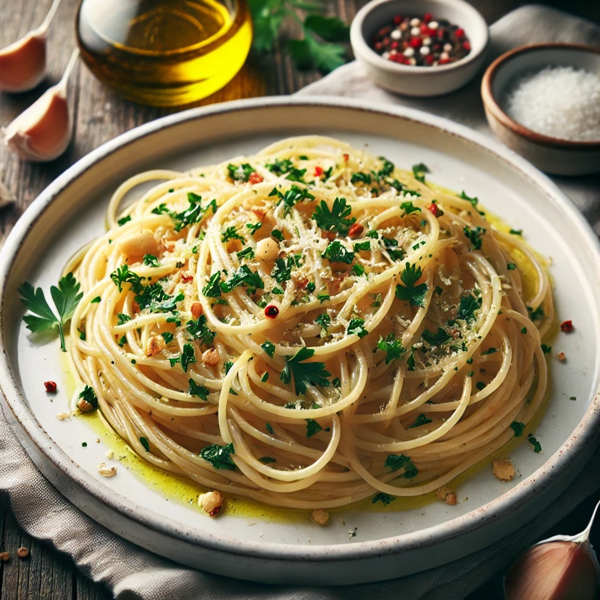

Odin Recipes | Spaghetti Aglio e Olio (Garlic and Oil Pasta)
Spaghetti Aglio e Olio (Garlic and Oil Pasta)

Description
Spaghetti Aglio e Olio, pronounced ah-li-oh ee o-li-oh,
is a traditional Italian dish made with just pasta, garlic, simple
seasonings, and olive oil.
Ingredients
This recipe yields 4 servings.
1 pound uncooked spaghetti
1/2 cup olive oil
6 cloves garlic, thinly sliced
1/4 teaspoon red pepper flakes, or to taste
Salt and freshly ground black pepper to taste
1/4 cup chopped fresh Italian parsley
1 cup finely grated Parmigiano-Reggiano cheese
Steps
Gather all ingredients.
Bring a large pot of lightly salted water to a boil. Cook spaghetti in the boiling water, stirring
occasionally until cooked through but firm to the bite, about 10 to 12 minutes. Drain and transfer to a
pasta bowl.
While the pasta is cooking, combine olive oil and garlic in a cold skillet.
Cook over medium heat to slowly toast garlic, about 10 minutes. Reduce heat to medium-low when olive oil
begins to bubble. Cook and stir until garlic is golden brown, about another 5 minutes. Remove from heat.
Stir red pepper flakes, salt, and black pepper into pasta.
Pour in hot olive oil and garlic, and sprinkle on Italian parsley and half of the Parmigiano-Reggiano
cheese. Toss until combined.
Serve pasta topped with the remaining Parmigiano-Reggiano cheese.